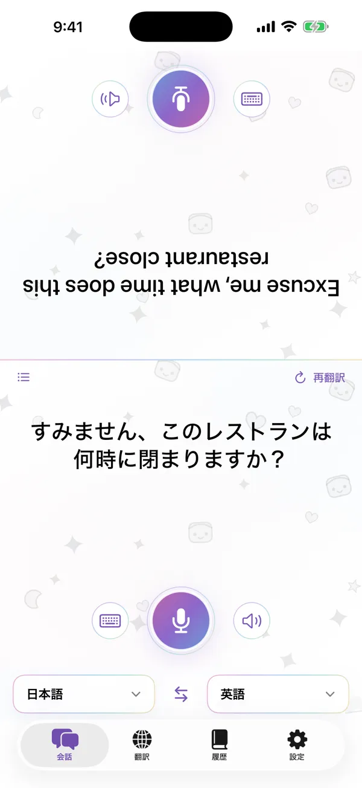
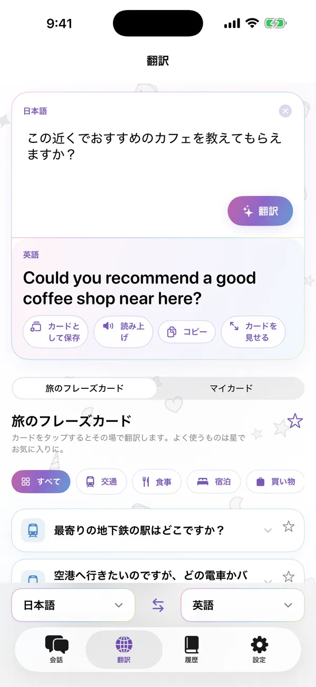
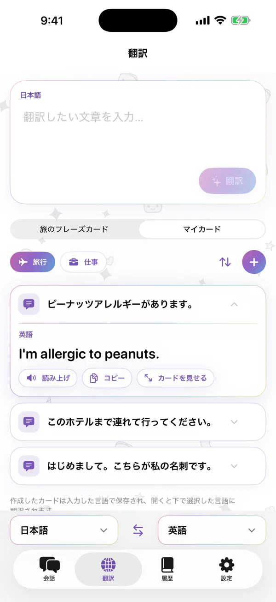
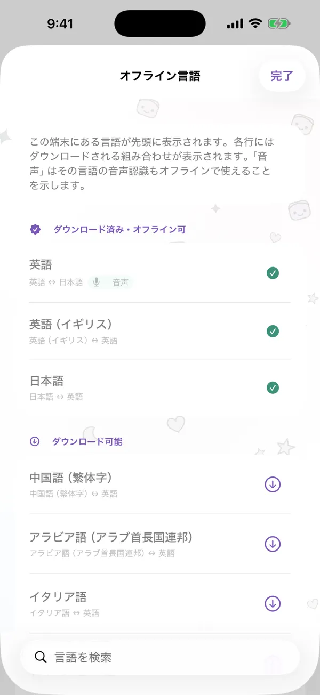

向かい合って会話
画面が2つに分かれ、相手側は上下反転して表示されるので、iPhoneを2人の間に置くだけで会話できます。話しても入力しても、それぞれの言語で翻訳が読めます。
- デバイス上の音声認識
- どの発言も再生可能
- 翻訳を音声で読み上げ
iPhone用翻訳アプリ
向かい合って会話し、よく使うフレーズをカードに保存。翻訳はすべてiPhone上で行うので、オフラインでも使えます。
App Storeで近日公開iPhone · iOS 18以降 · ダウンロード無料
すみません、このレストランは何時まで開いていますか？
Excuse me, what time does this restaurant close?
実際のiPhoneでアプリをざっとご紹介します。
画面が2つに分かれ、相手側は上下反転して表示されるので、iPhoneを2人の間に置くだけで会話できます。話しても入力しても、それぞれの言語で翻訳が読めます。
文章を入力またはペーストして翻訳。コピーや読み上げのほか、目の前の相手に大きな全画面カードとして見せることもできます。
旅行や仕事でよく使うフレーズをカードにして、名前を付けて並べ替えられるデッキに保存。翻訳や履歴からもカードに追加でき、次回は選んだ言語に翻訳されます。
交通、食事、宿泊、買い物、道案内。カードをタップするだけでその場で翻訳されます。よく使うカードにはスターを付けておけます。
会話も翻訳もすべてiPhoneに日付ごとに保存され、お気に入りにも登録できます。復習モードでは、履歴がフラッシュカードに変わります。
翻訳にはAppleのオンデバイスモデルを使用します。言語を一度ダウンロードすれば、接続なしでも使えます。話した内容や入力した内容がサーバに送信されることはありません。




会話と翻訳に必要な機能はすべて無料。Proは、自分のカードをたくさん作りたい方向けです。
週額、月額、または買い切りの永久版からお選びいただけます。価格はApp Storeに現地通貨で表示されます。